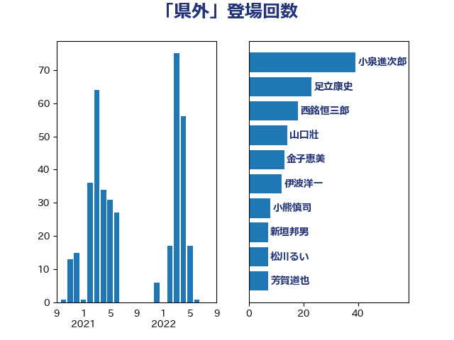

単語「県外」

| 小泉進次郎 | 自由民主党 | 39 回 |
| 足立康史 | 日本維新の会 | 23 回 |
| 西銘恒三郎 | 自由民主党 | 18 回 |
| 山口壯 | 自由民主党 | 14 回 |
| 金子恵美 | 立憲民主党 | 13 回 |
| 伊波洋一 | 無所属 | 12 回 |
| 小熊慎司 | 立憲民主党 | 8 回 |
| 新垣邦男 | 立憲民主党 | 7 回 |
| 松川るい | 自由民主党 | 7 回 |
| 芳賀道也 | 国民民主党 | 7 回 |
| 岸信夫 | 自由民主党 | 6 回 |
| 石井苗子 | 日本維新の会 | 5 回 |
| 若松謙維 | 公明党 | 5 回 |
| 岩渕友 | 日本共産党 | 4 回 |
| 平沢勝栄 | 自由民主党 | 4 回 |
| 斉藤鉄夫 | 公明党 | 4 回 |
| 猪口邦子 | 自由民主党 | 4 回 |
| 福島みずほ | 社会民主党 | 4 回 |
| 長友慎治 | 国民民主党 | 4 回 |
| 堀内詔子 | 自由民主党 | 3 回 |
| 宮崎政久 | 自由民主党 | 3 回 |
| 横山信一 | 公明党 | 3 回 |
| 片山大介 | 日本維新の会 | 3 回 |
| 玉木雄一郎 | 国民民主党 | 3 回 |
| 細野豪志 | 自由民主党 | 3 回 |
| 菅義偉 | 自由民主党 | 3 回 |
| 萩生田光一 | 自由民主党 | 3 回 |
| 高見康裕 | 自由民主党 | 3 回 |
| 麻生太郎 | 自由民主党 | 3 回 |
| 勝部賢志 | 立憲民主党 | 2 回 |
| 岸真紀子 | 立憲民主党 | 2 回 |
| 早坂敦 | 日本維新の会 | 2 回 |
| 末松信介 | 自由民主党 | 2 回 |
| 梅村みずほ | 日本維新の会 | 2 回 |
| 梶山弘志 | 自由民主党 | 2 回 |
| 清水貴之 | 日本維新の会 | 2 回 |
| 滝波宏文 | 自由民主党 | 2 回 |
| 田名部匡代 | 立憲民主党 | 2 回 |
| 田村まみ | 国民民主党 | 2 回 |
| 石川香織 | 立憲民主党 | 2 回 |
| 福島伸享 | 無所属 | 2 回 |
| 茂木敏充 | 自由民主党 | 2 回 |
| 西村康稔 | 自由民主党 | 2 回 |
| 赤嶺政賢 | 日本共産党 | 2 回 |
| 高橋千鶴子 | 日本共産党 | 2 回 |
| 伊藤孝恵 | 国民民主党 | 1 回 |
| 加田裕之 | 自由民主党 | 1 回 |
| 加藤鮎子 | 自由民主党 | 1 回 |
| 北神圭朗 | 無所属 | 1 回 |
| 國重徹 | 公明党 | 1 回 |
| 塩村あやか | 立憲民主党 | 1 回 |
| 大塚拓 | 自由民主党 | 1 回 |
| 小寺裕雄 | 自由民主党 | 1 回 |
| 山岡達丸 | 立憲民主党 | 1 回 |
| 山本博司 | 公明党 | 1 回 |
| 岸田文雄 | 自由民主党 | 1 回 |
| 川田龍平 | 立憲民主党 | 1 回 |
| 庄子賢一 | 公明党 | 1 回 |
| 後藤茂之 | 自由民主党 | 1 回 |
| 徳永エリ | 立憲民主党 | 1 回 |
| 枝野幸男 | 立憲民主党 | 1 回 |
| 横沢高徳 | 立憲民主党 | 1 回 |
| 江島潔 | 自由民主党 | 1 回 |
| 清水真人 | 自由民主党 | 1 回 |
| 渡辺周 | 立憲民主党 | 1 回 |
| 源馬謙太郎 | 立憲民主党 | 1 回 |
| 玄葉光一郎 | 立憲民主党 | 1 回 |
| 田嶋要 | 立憲民主党 | 1 回 |
| 田村憲久 | 自由民主党 | 1 回 |
| 石井正弘 | 自由民主党 | 1 回 |
| 福田昭夫 | 立憲民主党 | 1 回 |
| 穂坂泰 | 自由民主党 | 1 回 |
| 舟山康江 | 国民民主党 | 1 回 |
| 舩後靖彦 | れいわ新選組 | 1 回 |
| 赤羽一嘉 | 公明党 | 1 回 |
| 近藤和也 | 立憲民主党 | 1 回 |
| 遠藤良太 | 日本維新の会 | 1 回 |
| 金城泰邦 | 公明党 | 1 回 |
| 鈴木俊一 | 自由民主党 | 1 回 |
| 長妻昭 | 立憲民主党 | 1 回 |
| 馬場雄基 | 立憲民主党 | 1 回 |